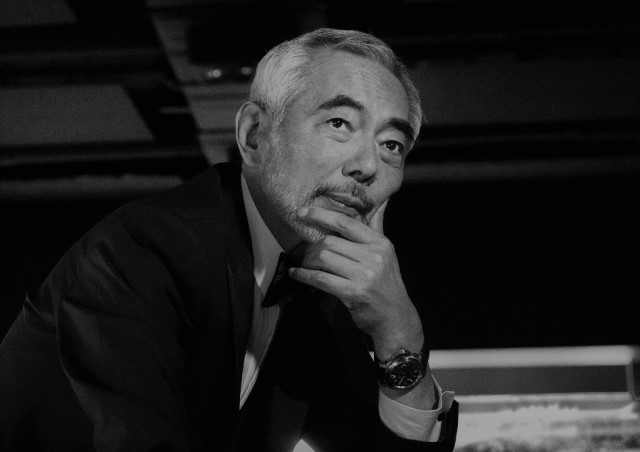
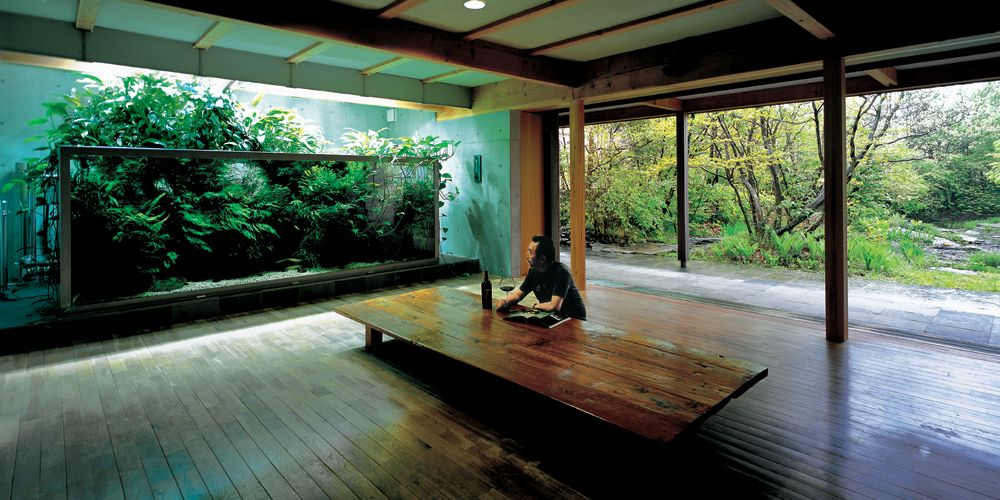
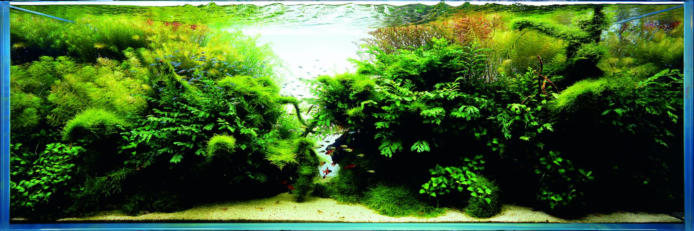
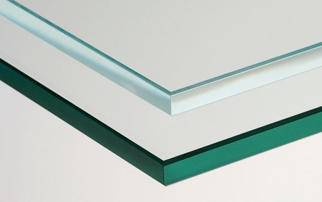
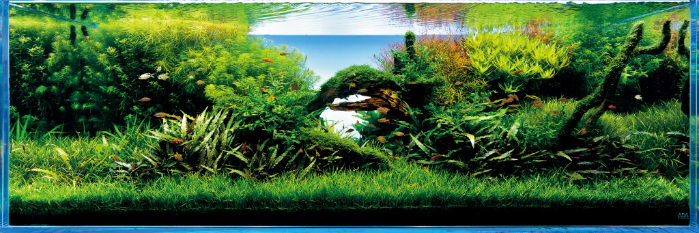
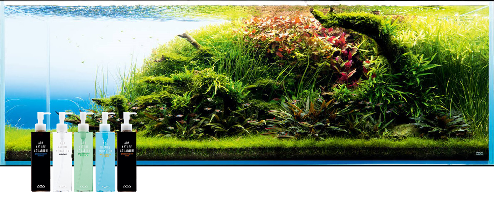
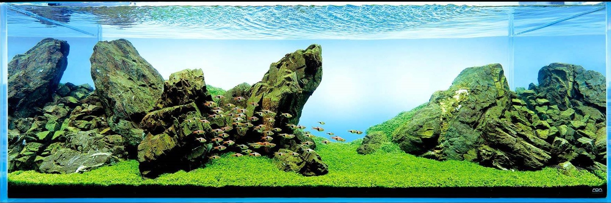
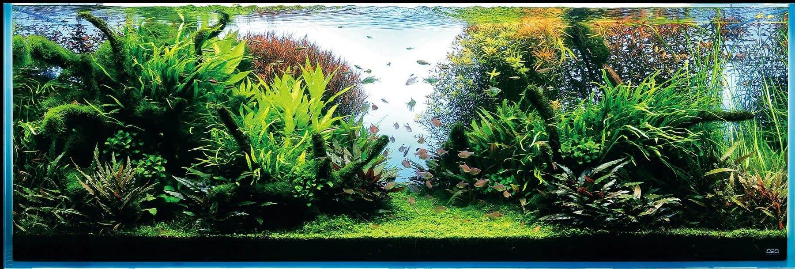
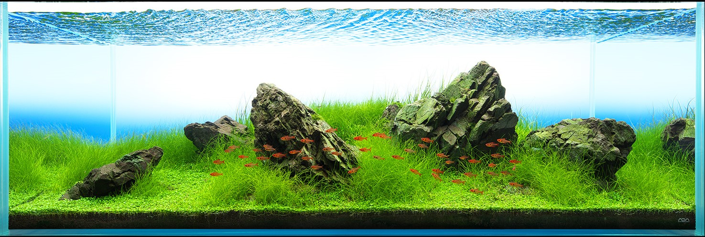

Krótka historia akwarystyki naturalnej
Za prekursora i twórcę akwarystyki naturalnej uważany jest japoński projektant i fotograf Takashi Amano. Znacząco przyczynił się do ukształtowania pojęcia akwarium naturalnego. Amano wraz ze swoją firmą Aqua Design Amano (w skrócie ADA) rozprowadzał własne produkty akwarystyczne, w tym specjalne akcesoria do sadzenia roślin i formowania podwodnych krajobrazów Dzięki niemu japońska sztuka ogrodnicza znalazła zastosowanie jako element wzornictwa w aranżacji akwariów i sposobach sadzenia w nich roślin.
 Czym jest akwarystyka naturalna?
Jest to rodzaj akwarystyki, który polega na odtworzeniu zaczerpniętych z natury krajobrazów za pomocą naturalnych materiałów takich jak korzenie oraz kamienie, które połączone z roślinami oraz tropikalnymi rybami tworzą harmonię podwodnego świata. Dzięki tak stworzonej aranżacji akwarium staje się relaksującym zakątkiem naszego pomieszczenia.
Od czego zacząć?
Jest wiele sposobów na stworzenie pięknego akwarium. Chcielibyśmy zaproponować Wam wydeptaną przez nas ścieżkę, która doprowadzi was do celu, jakim jest piękne akwarium w stylu naturalnym. Będzie to pokazanie pewnego procesu, który pomoże Wam uniknąć różnych błędów, zdobycie wiedzy i umiejętności pozwalających założyć i pielęgnować własne akwarium naturalne. Założenie akwarium naturalnego wiąże się z wieloma zagadnieniami takimi, jak:
Jakie szkło wybrać do akwarium?
Istnieją dwa podstawowe rodzaje szkła do akwarium: Float oraz OptiWhite. Szkło Optiwhite posiada mniejszą zawartość żelaza, dzięki czemu nie posiada zielonkawego zabarwienia i ma większą przejrzystość. Pozwala to na lepsze odzwierciedlenie kolorów ryb i roślin w akwarium.
Argumentem przemawiającym za typem Float jest cena, która jest niższa. Kiedy kupujemy małe zbiorniki, różnice cen nie są mocno odczuwalne, ale kiedy decydujemy się na coś większego, to dysproporcja między Float a OptiWhite może okazać się decydująca na korzyść tego pierwszego.
Jakie oświetlenie wybrać do akwarium?
Oświetlenie jest jednym z najważniejszych elementów budowy akwarium. Dzięki dobremu oświetleniu, rośliny wodne mogą w sposób niezakłócony przeprowadzać proces fotosyntezy, a zwierzęta wodne będą ładnie się prezentować.
Słabo oświetlone zbiorniki są łatwiejsze w utrzymaniu, nie wymagają dużego nakładu pracy aby utrzymać je wdobrej formie.
Zastosowanie silnego daje możliwość uprawiania wymagających roślin. Silne oświetlenie rodzi jednak konieczność obfitego nawożenia, regularnych podmian wody, częstego przycinania roślin oraz podawania do wody dwutlenku węgla w postaci gazowej.
Dobierając oświetlenie w technologii LED do akwarium należy zwrócić uwagę na:
Moc wyrażaną w lumenach na litr wody (lm/l):
- 10 słabe światło
-
umożliwiające uprawę wyłącznie cieniolubnych i mało wymagających roślin. Widoczność w zbiorniku będzie dostateczna.
- 20 dobre światło
-
nie wymagające dozowania dwutlenku węgla i obfitego nawożenia roślin. Pozwala uprawiać większość łatwych w uprawie roślin. Widoczność w zbiorniku będzie dobra, ale jasność samego akwarium będzie mało efektowna.
- 30 bardzo dobre oświetlenie
-
dedykowane głównie do regularnie nawożonych zbiorników roślinnych, wyposażonych w instalację CO2 i żyzne podłoże. Pozwala na uprawę wielu gatunków roślin, zarówno łatwych w uprawie jak i tych wymagających. Widoczność w zbiorniku będzie bardzo dobra, a jasność akwarium będzie przykuwała uwagę w ciemnych pomieszczeniach.
- 40 i więcej
-
bardzo silne oświetlenie, na które decydują się profesjonaliści do zbiorków roślinnych z instalacją CO2, regularnym nawożeniem i żyznym podłożem. Ilość światła wystarczająca do uprawy wszystkich światłolubnych roślin. Widoczność w zbiorniku będzie znakomita, a akwarium będzie prezentowało się efektownie również w jasnych pomieszczeniach.
Temperaturę barwową wyrażaną w kelwinach (K):
- 6 500
-
jasne światło o neutralnej barwie, zbliżone do światła słonecznego, które bardzo dobrze oddaje kolory ryb i roślin.
- 8 000
-
jasne, zimne światło o purpurowym zabarwieniu wynikającym ze zwiększonej ilości fal niebieskich i czerwonych (świetlówki PLANT), które powodują lepszy wzrost roślin.
- 10 000
-
światło o błękitnej barwie, zwykle stosowane w połączeniu z 20 000 K w zbiornikach morskich gdzie zapewniają prawidłowy wzrost koralowców.
- 20 000
-
światło o różowej barwie, zwykle stosowane w połączeniu z 10 000 K w zbiornikach morskich gdzie zapewniają prawidłowy wzrost koralowców.
Filtracja w akwarium
Słowo filtracja w akwarystyce jest niezaprzeczalnie najważniejszym terminem jaki każdy akwarysta powinien opanować i jednocześnie i niestety najbardziej zaniedbanym tematem przez początkujących akwarystów i wielu sprzedawców w sklepach akwarystycznych i zoologicznych.
W akwarystyce możemy wyodrębnić 3 najważniejsze rodzaje filtracji:
- Filtracja biologiczna
- Filtracja mechaniczna
- Filtracja chemiczna
- Filtracja biologiczna
-
Filtracja biologiczna to najważniejszy element filtracji bez którego nie może istnieć akwarium! Filtracja biologiczna to filtracja wody przez mikro organizmy i bakterie. Wśród tych bakterii jest wiele szczepów i gatunków jak nitrosomonas sp., nitrobacter sp., nitrospira sp. itd ale nie jest to teraz istotne, o szczepach bakteri będzie w kolejnym artykule. Ważne jest na tym etapie uzmysłowienie sobie, że mikroorganizmy jak bakterie, mikroskopijne, niewidzialne żyjątka bardzo skutecznie filtrują wodę czyli oczyszczają ją ze szkodliwych związków i toksyn jak np amoniak (NH3/NH4), czy azotyny (NO2), które są "usuwane" z wody przez bakterie tlenowe (nitryfikacyjne.) Są również inne szczepy bakterii tlenowych jak i bakterie beztlenowe i rożne ich szczepy ale o tym również w innym artykule.
- Filtracja mechaniczna
-
Filtracja mechaniczna to element filtracji akwarium który jest dodatkiem dla filtracji biologicznej a nie wymogiem. Filtracja mechaniczna to nic innego jak mechaniczne filtrowanie wody. W akwarium odbywa się za pomocą wkładów do filtracji mechanicznej jak rożnego rodzaju gąbki, waty, włókniny i inne media i wkłady do tego celu. Filtracja mechaniczna polega na oczyszczaniu wody z wizualnych zanieczyszczeń jak np szczątki pokarmu, roślin, i inne cząsteczki organiczne unoszące się w wodzie, które widzimy gołym okiem. Można by ją porównać do przelewania filiżanki kawy z fusami przez gazę, kawa przeleci, fusy czyli nasze zanieczyszczenia zostaną wy-filtrowane mechaniczne i osiądą na gazie.
- Filtracja chemiczna
-
Filtracja chemiczna to element filtracji który może być stosowany dodatkowo do filtracji biologicznej i mechanicznej w celu realizowania wyśrubowanych zadań, nie jest wymogiem. Filtracja chemiczna odbywa się poprzez specjalistyczne wkłady i media do tego celu. Termin ten określa filtrowanie wody inne niż filtracja biologiczna czy mechaniczna. Filtracja chemiczna może być realizowana za pomocą szeregu produktów do tego celu np specjalistycznych węgli, żywic, spieków z dodatkami i różnych mieszanek. Efekty filtracji chemicznej mogą być bardzo szerokie lub selektywne. Np możemy usunąć same azotany (No3) z wody, lub usunąć metale ciężkie z wody, lub usunąć fosforany (Po4) z wody lub usunąć zabarwienie wody itd itp.
Nawożenie w akwarium
Temat nawożenia akwarium jest jednym z częściej poruszanych przez osoby, które marzą o pięknym akwarium. Metod skutecznego nawożenia jest kilka, dlatego zanim przystąpimy do tej czynności, warto zacząć od uzyskania podstawowych informacji. Przede wszystkim musimy mieć świadomość tego, że każde akwarium jest inne, dlatego też metoda nawożenia może nieznacznie różnić się w zależności od przypadku.
- Istotne jest podłoże
-
Bardzo istotną kwestią w procesie nawożenia jest wybór odpowiedniego podłoża, które będzie jednocześnie dopasowane do rodzaju zakładanego akwarium. Na rynku, dostępnych jest kilka rodzajów, niemniej jednak każdy z nich jest po to, aby wspomóc rośliny w ich odpowiednim wzroście i prawidłowym rozwoju. Większość specjalistycznych podłoży do akwarium, bogatych jest w składniki makro i mikroelementy, które pomagają roślinom podczas zakorzeniania oraz dostarczają im odpowiednich składników w pierwszej fazie wzrostu. Na przykład w przypadku akwarium roślinnego, najlepszym podłożem jest podłoże aktywne - organiczne.
- Zadbaj o stabilność
-
Najlepsza dla odpowiedniego wzrostu roślin jest stabilność. Oczywiście, większość z nas cieszy się z każdego, nowo powstałego pędu w akwarium, niemniej jednak warto mieć się na baczności. Szybki wzrost nie jest tak dobry, jak mogłoby się wydawać na pierwszy rzut oka. Te najszybciej rosnące rośliny powinniśmy systematycznie przycinać, ewentualnie zmienić na takie, które rosną wolniej. Najważniejsze w uzyskaniu stabilności w zbiorniku jest stopniowe wprowadzanie ewentualnych zmian, nigdy nie robimy tego w drastyczny sposób np: zmieniając nawożenie róbmy delikatną korektę co tydzień a nie wlewajmy na raz całej butelki nawozu. Warto również pamiętać że im więcej roślin w akwarium roślinnym tym bardziej stabilniejszy będzie ekosystem akwarium.
- Czas na nawożenie
-
PMDD i EI, to metody nawożenia roślin, które pozwalają na uzyskanie zdrowych roślin oraz stabilności akwarium. Metoda PMDD, polega na nawożeniu akwarium w odpowiednie składniki odżywcze, ze szczególnym ograniczeniem fosforanów, w skrócie dostarczamy wszystkie składniki oprócz fosforanów (PO4). Metodę PMDD polecamy do akwariów bez CO2. Drugą z metod jest EI, czyli Estimative Index, która obejmuje dozowanie składników odżywczych, także fosforanów, bez konieczności ich kontrolowania, w skrócie dostarczamy do akwarium wszystkie składniki w nadmiarze. W metodzie Estimative Index najważniejszym czynnikiem gwarantującym sukces jest stały i wysoki poziom rozpuszczonego Co2 w wodzie, oraz regularne cotygodniowe duże (50%) podmiany wody. Takie postępowanie pozwala uniknąć przedawkowania nawozów.
Aranżacja zbiornika
Niewątpliwie twórcą akwarystyki naturalnej jest Takashi Amano, którego pracami zachwycamy się już od ponad 30 lat. Jako profesjonalny fotograf, doskonale potrafił przenieść podpatrzone w naturze krajobrazy do akwarium, łącząc korzenie i skały z roślinami w niepowtarzalny sposób – zapierający dech w piersiach niejednego akwarysty. W ciągu jego wieloletniej pracy na rzecz rozwijania akwarystyki naturalnej wykreował cztery podstawowe style aranżacji.
"Anything blocking the aquascape is unnecessary." - Takashi Amano
- Iwagumi
-
Najstarszy styl, którego źródło można odnaleźć w sztuce tworzenia japońskich ogrodów. Odpowiednio ustawione skały są jedyną formą dekoracji. Wbrew pozorom, ułożenie skał, dobór ich wielkości, koloru oraz faktury, nie jest takie proste i oczywiste. Zazwyczaj środek ciężkości aranżacji przesuwa się w jedną ze stron.
Przy tworzeniu tego typu aranżacji warto kierować się zasadą złotego podziału, która mówi o tym, że element przyciągający wzrok powinien znajdować się w miejscu, gdzie stosunek odległości od boków akwarium powinien mieć proporcje około 1:1,6. Spotyka się również doskonałe aranżacje, gdzie kluczowy element jest umieszczony centralnie.
Duże znaczenie ma odpowiednie ułożenie podłoża, w tym zachowanie właściwego nachylenia, co pozwala uzyskać lepszą perspektywę, a co za tym idzie sam odbiór kompozycji przez oglądających. Do obsadzenia zbiornika, w szczególności na pierwszym i drugim planie używa się roślin, które po rozrośnięciu się tworzą „trawniki”.
 - Ryuboku
-
Styl w którym swobodnie można łączyć drewno i skały, gdzie twórca jest ograniczony wymiarami akwarium i własną fantazją. Ta dowolność kompozycji sprawia, że jest to najczęściej spotykany rodzaj aranżacji w akwarystyce roślinnej.
Odtworzenie dzikich lasów deszczowych, gdzie często korzenie przeplatają się wzajemnie, umiejętnie wkomponowane skały, dekoracje porośnięte mchami sprawiają, że aranżacje tego typu są często bardzo skomplikowane, gdzie przykłada się dużo uwagi na detale. W akwariach typu ryuboku, przy odpowiedniej kompozycji, można zastosować każdy rodzaj roślin, każdego planu: od roślin trawnikowych po rośliny wysokie na trzecim planie, a także epifity porastające korzenie i kamienie.
 - Mizube
-
Mizube to rozwinięcie stylu ryuboku. W tym jednak przypadku dekoracje wychodzą poza obrys akwarium. Korzenie i skały wystające ponad lustro wody sprawiają, że w ciekawy sposób można pokazać przekrój strumienia lub tropikalnej rzeki.
Dodatkowe możliwości daje zastosowanie roślin, które mogą przerastać i wyrastać ponad lustro wody. Charakter tych aranżacji sprawia, że mogą być tworzone tylko w akwariach otwartych , najlepiej z podwieszonym nad nimi oświetleniem. Dzięki temu wyrastające rośliny i wystające dekoracje dodają aranżacji dodatkowego uroku.

- Ragwork
-
Najmłodszy z przedstawionych stylów, którego historia ma niespełna kilka lat. Ragwork bazuje na koncepcji iwagumi. W tym stylu, dzięki użyciu dużej ilości skał, odtwarzane są strome górskie zbocza. Nie stosuje się tu żadnych konkretnych zasad, lecz należy starać się uzyskać, jak najlepsze naśladowanie natury.
Spotykane w akwariach górskie łańcuchy nie są jednak proste do ułożenia. Nie są również łatwe do obsadzenia roślinnością. Należy pamiętać, aby nie stosowa zbyt wysokich roślin, żeby nie zatracić wrażenia górskich łąk.

Obsada akwarium
W aquascapingu powinieneś zawsze skupiać się na roślinach wodnych, a nie na rybach. A na początku zakładania nowego akwarium zawsze lepiej jest mieć więcej roślin niż ryb, zwłaszcza długie rośliny łodygowe, które mają większe tempo wzrostu, co pomoże w wchłanianiu dodatkowych składników odżywczych z wody.
Jeśli chodzi o ryby tropikalne, z pewnością już wiesz, które gatunki są bardziej odpowiednie dla twoich przyszłych krajobrazów wodnych. Duże pielęgnice amerykańskie lub afrykańskie będą zakłócać twój krajobraz, a nawet zjedzą rośliny wodne, gdy tylko wprowadzisz je do akwarium z roślinami.
Wybierz małe ryby, takie jak: Bystrzyk Amandy, Danio pręgowany lub Neon Inessa. To bardzo małe ryby tropikalne, które w większych grupach ładnie podkreślą całą aranżację. Oprócz ryb w akwarystyce często wykorzystuje się mały gatunek krewetek ozdobnych Neocaridina oraz ozdobne gatunki ślimaków wodnych.